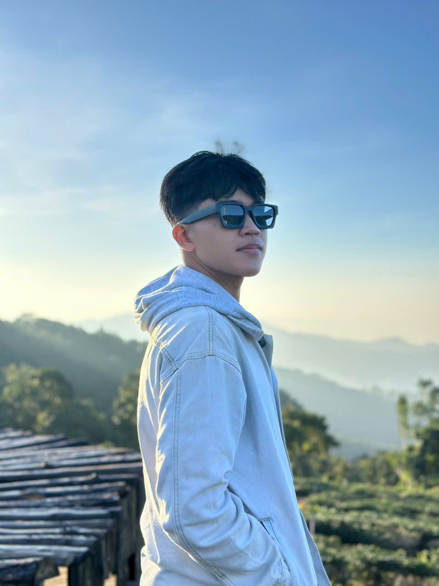
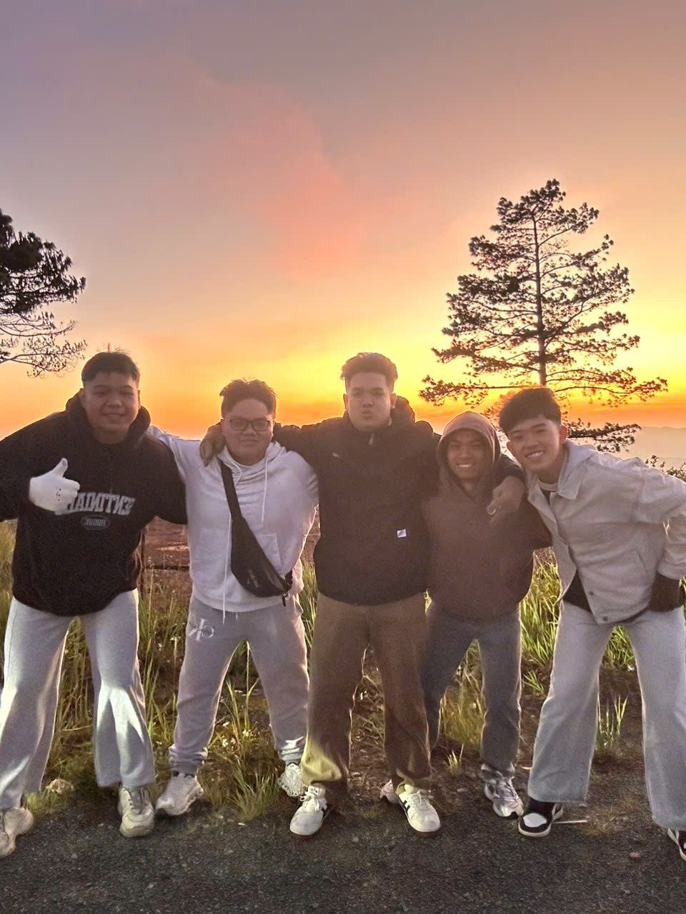

I like systems that stay up, can be measured, and come with clear documentation.

Off the clock: chasing clouds with friendsA reduced version of my enterprise network project
Items marked “Core” are the ones I used most in the projects above.
What keeps my energy up and taught me to work with people.